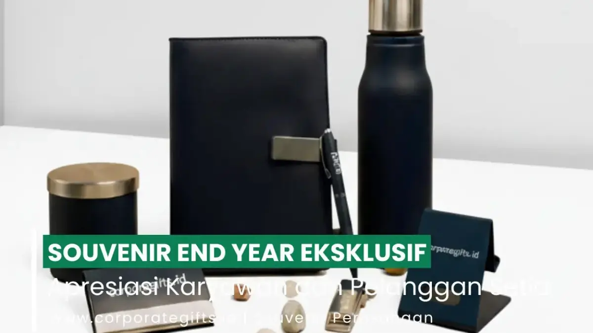

Corporate Gifts ID - Souvenir end year eksklusif adalah hadiah akhir tahun berkualitas tinggi yang diberikan perusahaan kepada karyawan, klien, dan mitra bisnis sebagai bentuk apresiasi nyata atas kontribusi mereka sepanjang tahun.
Poin Kunci Souvenir Akhir Tahun Perusahaan:
- Momen Refleksi & Apresiasi: Menutup tahun dengan penghargaan tulus terbukti memperkuat retensi karyawan dan mempererat relasi B2B.
- Nilai Guna Tinggi: Pilihan produk seperti agenda kulit emboss, tumbler stainless, dan gadget modern menjamin manfaat pakai harian.
- Sentuhan Personalisasi: Tambahan nama penerima, kemasan hardbox magnetik, dan kartu ucapan apresiasi menciptakan kesan prestisius.
- Branding yang Halus: Teknik cetak subtle seperti grafir laser atau deboss menjaga keanggunan produk saat digunakan di depan publik.
Memberikan merchandise akhir tahun yang dirancang cermat tidak hanya mendongkrak motivasi dan kepuasan kerja tim internal, tetapi juga berfungsi sebagai strategi branding yang solid untuk mempertegas citra positif korporasi di mata para relasi bisnis.
Mengapa Souvenir End Year Penting bagi Perusahaan?
Penghujung tahun merupakan momentum krusial untuk melakukan evaluasi, refleksi, dan perayaan bersama atas seluruh pencapaian selama dua belas bulan kerja keras. Memberikan souvenir akhir tahun memiliki makna simbolis yang mendalam:
- Bagi Karyawan: Merupakan pengakuan nyata atas pengorbanan waktu dan dedikasi operasional mereka dalam mendorong pertumbuhan perusahaan. Hal ini secara langsung menumbuhkan rasa memiliki (sense of belonging) yang tinggi menjelang tahun yang baru.
- Bagi Klien & Rekanan Bisnis: Souvenir bertindak sebagai tanda terima kasih atas kepercayaan kemitraan profesional, menjaga kehangatan hubungan bisnis agar semakin erat di periode kontrak berikutnya.
Lebih dari sekadar benda fisik, cinderamata yang tepat mampu menorehkan impresi emosional positif jangka panjang, terutama bila dikemas secara eksklusif dengan standar estetika modern.
Ciri Souvenir End Year Eksklusif yang Bernilai Tinggi
Sebelum menentukan pilihan produk pengadaan, penting bagi tim procurement dan HR untuk memahami kriteria yang membuat sebuah cinderamata tergolong eksklusif:
- Desain Elegan dan Bernilai Guna Nyata: Produk dengan tampilan visual kontemporer dan fungsi fungsional sehari-hari jauh lebih disukai. Misalnya, agenda kerja bersampul kulit halus atau tumbler berinsulasi vakum dengan grafir logo presisi.
- Material Berkualitas dan Tahan Lama: Hindari material plastik murah yang mudah pecah. Prioritaskan bahan kulit sintetis premium, logam aluminium berbobot mantap, kaca tebal, atau kayu jati solid yang awet dipakai bertahun-tahun.
- Kustomisasi Halus (Subtle Personalization): Sentuhan grafir nama individu karyawan atau monogram perusahaan menghadirkan nilai eksklusivitas personal yang tidak dapat dibeli di toko retail umum.
- Kemasan Hardbox Mewah: Kemasan luar adalah impresi pertama yang dilihat penerima. Penggunaan rigid hardbox magnetik, tatakan busa eva presisi, aksen pita satin, dan kartu ucapan bertekstur elegan melipatgandakan nilai persepsi hadiah.
Inspirasi Produk Souvenir End Year Eksklusif
Berikut beberapa kurasi ide cinderamata akhir tahun yang paling diminati instansi korporat di Indonesia:
1. Notebook Kulit Premium dengan Emboss Logo
Buku catatan bersampul kulit sintetis (PU leather) adalah pilihan klasik yang selalu relevan. Dilengkapi pita pembatas buku, slot kartu identitas, dan teknik cetak emboss atau deboss logo yang rapi, agenda ini siap mendampingi perencanaan target kerja di tahun mendatang.
2. Set Kopi Artisan atau Teh Herbal Eksklusif
Bagi rekan bisnis yang menggemari waktu santai di rumah atau kantor, paket biji kopi pilihan nusantara atau artisan tea beraroma menenangkan dalam tabung kaca dan kemasan kayu vintage menghadirkan nuansa kehangatan yang sangat berkesan.

Paket merchandise akhir tahun kustom logo perusahaan dengan aksen elegan dan fungsional penunjang kerja.
3. Lilin Aromaterapi Alami (Scented Soy Candle)
Produk gaya hidup ini kian populer sebagai bingkisan relaksasi akhir tahun. Dibuat dari lilin kedelai alami (soy wax) bebas racun dengan wangi aromaterapi lavender atau cedarwood, produk ini membantu meredakan penat pasca-tenggat waktu akhir tahun yang padat.
4. Perangkat Teknologi Nirkabel Modern
Pilihan gadget esensial seperti powerbank fast charging tipis, speaker bluetooth portabel beraksen kayu, atau flashdisk custom logam menghadirkan reputasi korporasi yang maju, dinamis, dan mengikuti tren zaman.
Tips Personalisasi Souvenir agar Lebih Berkesan
Sentuhan personalisasi yang tepat mengubah barang biasa menjadi kenang-kenangan yang berharga:
- Sematkan Pesan Apresiasi Khusus: Cetak surat ucapan akhir tahun yang ditandatangani jajaran direksi, berisi ucapan terima kasih tulus atas kontribusi tim.
- Grafir Nama Penerima: Personalisasi nama masing-masing karyawan pada badan tumbler atau sampul buku menciptakan rasa dihargai yang mendalam.
- Harmonisasi Warna Identitas Merek: Selaraskan warna dasar produk atau pita kemasan dengan palet warna korporat untuk menjaga konsistensi identitas visual.
- Konsep Edisi Terbatas (Limited Edition): Beri penomoran edisi spesial penutup tahun guna memberikan prestise tinggi bagi yang menerimanya.
Tabel Rekomendasi Paket Souvenir Akhir Tahun
Berikut rangkuman opsi paket souvenir end year eksklusif yang dapat disesuaikan dengan alokasi anggaran dan sasaran penerima:
| Kategori Hadiah | Pilihan Produk Utama | Rekomendasi Kemasan | Target Penerima Utama |
|---|---|---|---|
| Executive Stationery Set | Notebook kulit PU emboss & pulpen logam grafir laser | Hardbox magnetik elegan dengan pita satin | Karyawan internal, staf manajerial, & peserta gathering |
| Wellness & Lifestyle | Lilin aromaterapi soy wax, mug keramik, & teh artisan | Wooden box eksklusif dengan aksen serut kayu halus | Klien loyal tahunan & tim proyek berprestasi tinggi |
| Modern Tech Package | Powerbank 10.000 mAh & wireless bluetooth speaker mini | Rigid box berbusa eva hitam presisi anti-goncangan | Mitra bisnis strategis & praktisi sektor teknologi |
| Luxury Gourmet Hamper | Kopi arabika spesial, toples kue kering, & vacuum tumbler | Hardbox custom double flap logo hotprint emas | Dewan komisaris, jajaran direksi, & pimpinan instansi |
Catatan: Seluruh kombinasi produk dan desain kemasan di atas dapat dipesan secara custom di CorporateGifts.ID dengan fleksibilitas minimum order (MOQ) mulai 50 unit.
Strategi Branding Melalui Souvenir Akhir Tahun
Agar cinderamata akhir tahun memberikan dampak maksimal bagi penguatan citra perusahaan, terapkan pedoman strategis berikut:
- Konsistensi Identitas Visual: Pastikan proporsi logo, tipografi, dan warna selaras dengan buku panduan brand guidelines kantor Anda.
- Pilih Produk Bernilai Guna Harian: Benda yang kerap dipakai di ruang kerja atau saat bepergian memberikan paparan merek yang berkelanjutan di hadapan publik.
- Cerminkan Nilai Inti Organisasi: Bila perusahaan Anda mengampanyekan keberlanjutan lingkungan, pilihlah souvenir berbahan ramah lingkungan seperti tumbler stainless dan kemasan kertas daur ulang bersertifikasi.
FAQ: Pertanyaan Seputar Souvenir End Year Perusahaan

Ditulis oleh: Arinda Zakia
Senior Corporate Gifting SpecialistSpesialis kurasi paket corporate gift dan hampers akhir tahun di CorporateGifts.ID. Berpengalaman mendampingi ratusan divisi procurement dan HR merancang cinderamata apresiasi berkualitas yang berdampak nyata pada retensi relasi bisnis.
Lihat Profil Lengkap & Panduan Lainnya